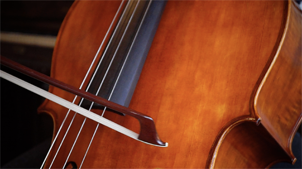
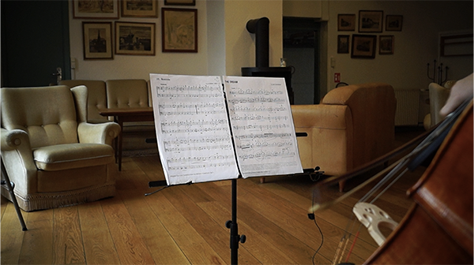
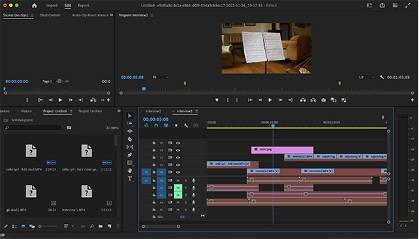

TEMA 05
VIDEOSITE
VIDEOSITE
VIDEOSITE


I tema 05 blev vi introduceret til videoproduktion, med formålet for at ende ud med to opgaver- videosite og virksomhedssite. Til videositet, var der mest fokus på videoproduktion. Opgaven var at udarbejde et video med fokus på en person og deres passion, lave en site til videoen og producere billeder fra optagelsen.
Til at optage videoen, var vi nede i tech og story lab, for at blive introduceret til udstyret. Her lærte vi om brugen af kameraer, mikrofoner og belysning. Til at redigere, brugte vi Premier pro, Audition og Photoshop. Vi udnyttede især den viden vi opnåede hér, til at udvikle videoen til virksomhedssitet i samme tema. Det var bl.a hvordan man klipper, laver b-rolls og opsætingen af indholdet.
Se løsningen hér
